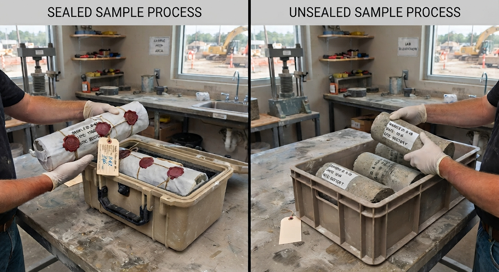

How CRTC receives, records and reports samples of any type, sealed or unsealed, so that your report states clearly what it covers.
A test result applies to the sample exactly as CRTC received it. A seal records that the sample reaching the laboratory is the one taken at your site, and that nobody opened or swapped it on the way. For routine quality control that may not matter. For acceptance, a third-party review or a dispute, it often does.
| Sealed | Unsealed | |
|---|---|---|
| What it means | The sample is closed in a container with a numbered seal applied at sampling or dispatch | The sample is delivered without a seal |
| Who applies the seal | You, with a witness where the contract requires one, such as the consultant or supervising engineer | Not applicable |
| What CRTC checks | Seal present, intact, and number matching your submission sheet | Labels and condition only |
| What the report states | Received sealed, with seal numbers and condition on arrival | Received unsealed. Sampling, handling and identification were not verified by CRTC |
| Best suited to | Acceptance, third-party witnessing, disputes, contractual or regulatory requirements | Internal quality control, trial mixes, research |
These categories describe how CRTC handles and reports submissions. If your contract or specification defines sealing differently, tell CRTC before you sample.
These are general practice. The test method and CRTC’s instructions for your tests govern.
| Sample type | Container and condition | Take care to |
|---|---|---|
| Concrete cylinders, cubes, cores | Wrapped in wet cloth, sealed in plastic, packed upright and cushioned | Never let them dry out. Do not cap or trim the ends |
| Cement | Airtight, moisture-proof container or sealed bag | Keep out of humidity and avoid lumps from damp |
| Aggregates and sand | Clean strong bags or containers, closed fully | Avoid loss of fines and mixing of sources. Use airtight containers if moisture content is needed |
| Soil | Airtight bags or jars for disturbed samples. Capped or sealed tubes for undisturbed samples | Preserve moisture. Keep undisturbed samples upright and protect from knocks |
| Bitumen and asphalt mixes | Clean, closed metal cans or strong sealed containers | Avoid contamination and heat. Label the grade and source |
| Bricks, blocks and pavers | Stacked and strapped or boxed to prevent chipping | Keep identification marks visible. Do not wet unless the test requires it |
| Steel bars and metals | Bundled with tags at both ends | Do not paint or cut. Keep heat numbers and brand marks legible |
| Water | Clean, rinsed bottles filled and closed fully | Keep cool and deliver promptly. Note date and time of sampling |
| Situation | CRTC action |
|---|---|
| Sealed, seal intact and number matches | Photographs the seal, records number and time, opens the container and logs each sample’s condition |
| Sealed, seal broken or number does not match | Photographs and records the finding, informs you where possible, and handles the sample as unsealed |
| Unsealed | Records labels and condition as received, and notes that sampling and handling were not verified |
| Labels missing or unclear | Contacts you before testing. Testing proceeds only when identification is agreed |
| Sample damaged, contaminated, or not in the required condition | Records the condition, contacts you, and reports it with the result |
Search, or filter by topic.
No. A seal only proves anything if it is applied at your site, before the samples leave your control. Samples that arrive without a seal are logged as unsealed. Where CRTC collects a sample itself, CRTC seals and records it.
CRTC records and photographs it, informs you where possible, and handles the samples as unsealed. The report states what was found.
No. Use a separate container and seal for each sample, so every seal number maps to one sample and one set of tests.
No. CRTC cannot verify how the sample was handled before it arrived, so sealing it on receipt would add nothing.
Not necessarily. Samples are tested the same way. The difference is what the report can claim: sampling, handling and identification were not verified by CRTC.
The quantity depends on the test method and the number of tests. Ask CRTC for the minimum quantity before you sample. Sending too little can make the test impossible.
No. Sealing secures the container. You still need to protect the sample’s condition, for example moisture in concrete and soil, or dryness in cement.
Deliver them promptly, keep them cool and closed, and write the sampling date and time on the label and the sheet. Ask CRTC about holding times for your test.
No. Both are tested to the same standard, with the same equipment, tolerances and reporting items.
Check your contract and specification. Where a third party or consultant must rely on the result, or a dispute is possible, sealed is normally the safer choice.
Not once testing has started. State the type on the submission sheet when you deliver.
CRTC keeps tested samples for [X] days unless you ask otherwise. Confirm with CRTC.
No matching questions. Try another word.
This guideline describes CRTC handling of sealed and unsealed submissions and general good practice for packing. It does not replace the applicable test method, your contract or your project specification, which govern if they differ. Questions: CRTC · crtc.ce@pust.ac.bd · +8802588844915 · CRTC, CE, PUST